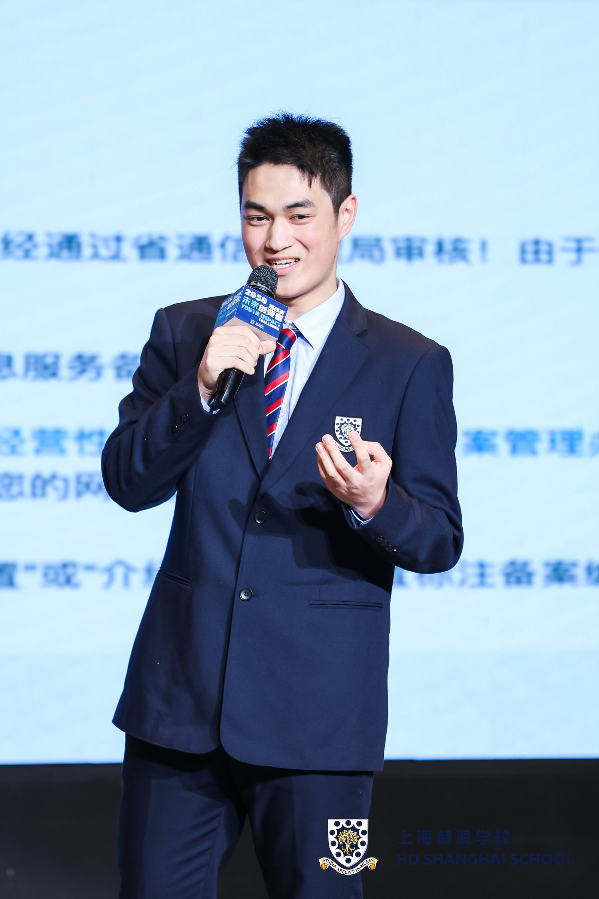
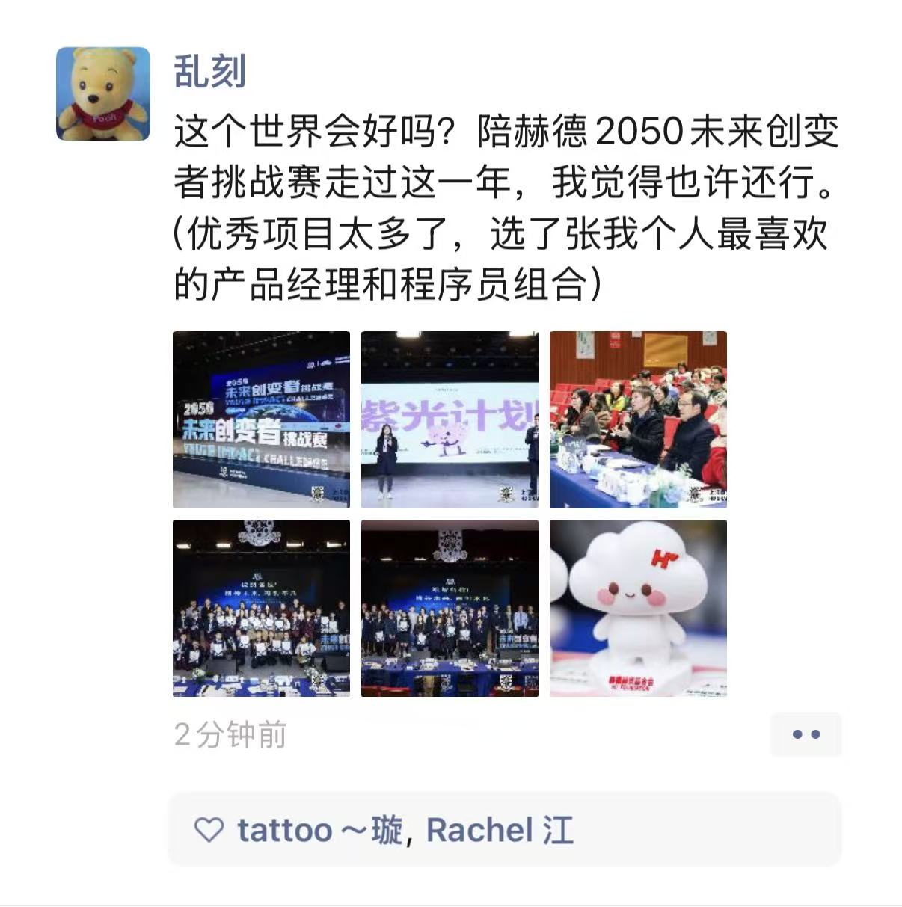
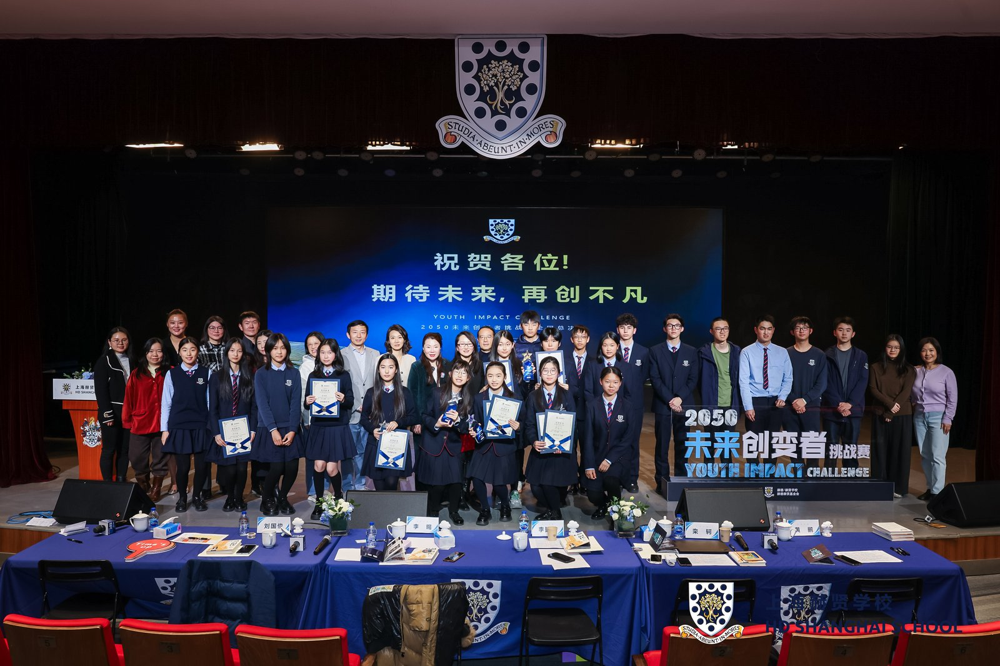

Our school's education group held a charity competition called the "2050 Future Changemakers Competition." It's said that the national champion could win a prize of 4000 yuan. Our "Purple Elf" project perfectly met all the requirements for participation, so we signed up. Actually, I was initially confident of winning the national championship. After all, most of the projects I knew of were just ideas without any practical application, while our project already had a complete app developed and available on the App Store. Furthermore, operating our app requires significant costs: an annual App Store fee of 688 yuan, a server fee of 99 yuan per year… the annual cost would add up to over 1000 yuan. Therefore, we really hoped to win the prize money to further develop our project.
The competition format was as follows: first, a preliminary round, where participants gave a presentation in front of their teachers, who would decide whether to advance (everyone advanced in this round). Then, the final round was held within our school, and the winning team advanced to the national finals and received the 1000 yuan prize. Finally, there was the national finals, which offered several awards, but the national champion received an additional 3000 yuan prize, bringing the total to 4000 yuan including the school finals prize.
In the preliminary rounds, we created a PowerPoint presentation and presented it to our design thinking teacher, Qiyao, which was approved. Although I must admit that my part in the first draft was terrible; I talked entirely about technical things, and my teacher looked completely bewildered. However, she still gave our project high praise: firstly, our project was well-completed, and secondly, my partner's presentation was excellent (yes, I was the one who dragged the project down 😂).
Then came the school finals, where we presented our project to school leaders and parent representatives. After several revisions, my part was much better than before, shifting the focus from the frameworks and technologies I used to the stories behind the development process. The competition went very smoothly. We not only made it to the national finals, but we also moved a teacher from the Student Development Center who helped us apply to the principal for more funding (although our stingy principal ultimately refused 🥴).
It was time for the national finals. Our teacher learned that students in Beijing were very competitive with their projects, so they wanted to give us some feedback before the competition. Two weeks before the competition, we shared our presentation with some school leaders, who offered many valuable suggestions. Based on their feedback, we finalized our PowerPoint presentation. You can download our final version here. Then, a week before the competition, we shared our presentation with the teachers in the school's marketing department. Although the PowerPoint couldn't be changed at this point, they still offered many helpful suggestions.
Finally, the day of the national finals arrived, and my partner and I went to Shanghai to participate. The competition was really high-level; it felt like the school spent a lot of money. They designed a mascot plush toy specifically for the competition, made a booklet for our entries, and the live streaming equipment was really high-end—I roughly estimate it cost over 50,000 yuan per unit, and they had two (I can't be sure because I know nothing about photography). The judges were also public welfare experts invited from various regions. Our performance was in the middle, and I felt the only team that could compete with us was another project from our class, this one helping people with disabilities. I personally thought they were very strong; they used 3D modeling technology to create an assistive device to help people with disabilities put on socks.
Now, it was our turn. Because we had rehearsed several times, our teamwork was quite good. During the final Q&A session, the judges gave us high praise. One judge asked how we came to collaborate, and I replied, "I've had a dream for a long time of developing my own app. Coincidentally, she had the same idea, so we hit it off and started working together."

Finally, all the teams finished their presentations, and it was time for the much-anticipated awards ceremony. The awards were given out from smallest to largest (every group received an award, to ensure fairness). We hadn't won any awards yet, so I realized we were going to win the grand prize. Sure enough, when it came to the last award, the host announced that we were the team with the highest total score—and that was us!
We were overjoyed to win the national championship. Our project also received a lot of recognition. A teacher sent me a picture of a post on WeChat Moments from a staff member of the Shanghai national finals, which reads below 👇

I'll end this passage with a group photo from the match, hoping the world will become a better place thanks to our innovative efforts!
